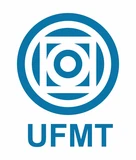
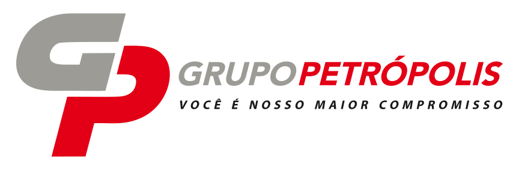
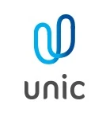

Pessoas melhores constroem empresas melhores.
Há 15 anos, a Coach'tigo desenvolve líderes e equipes em Cuiabá e Várzea Grande através de treinamentos corporativos, coaching e programas construídos para desafios reais das organizações.



Nem todo problema de equipe se resolve com mais um treinamento.
Uma organização pode estar enfrentando baixa produtividade, dificuldade de liderança, falhas de comunicação ou problemas comerciais. Antes de escolher uma ferramenta, é preciso entender o problema.
Sua liderança consegue desenvolver pessoas?
Sua equipe entende onde precisa melhorar?
Você consegue medir o resultado do treinamento?
É por isso que nossos projetos começam pelo diagnóstico.
Desenvolvimento que continua depois que a sala esvazia.
Diagnosticar
Entender cenário, pessoas e desafio.
Desenvolver
Construir a trilha adequada.
Aplicar
Transformar conhecimento em comportamento.
Medir
Acompanhar indicadores e evolução.
Desenvolvimento para diferentes momentos de pessoas e empresas.
Experiência não se improvisa.
"Há 15 anos ajudo pessoas e organizações a alcançarem resultados reais por meio do desenvolvimento humano, da liderança e da alta performance. Meu trabalho não é simplesmente levar conteúdo para uma sala. É provocar mudanças que continuem acontecendo quando o treinamento termina."
15 anos transformados em experiência.
Liderança mais forte, time mais engajado.
Equipe de liderança com dificuldade para dar feedback e alinhar prioridades entre áreas.
Diagnóstico inicial, trilha de desenvolvimento em liderança e acompanhamento por indicador.
Rotina de feedback estruturada e mais clareza de papel dentro dos times.
Quem já passou pelo método
Eu tinha o poder dentro de mim. Depois que fiz o LSC — Life & Self Coaching — descobri como usar as ferramentas que há em mim.
O desafio de parar de gastar sem necessidade me fez entrar num mundo de dívidas. O LSC foi o investimento mais barato em termos financeiros e o maior em termos de valorização pessoal.
Desde que saí do curso, tive certeza que havia participado de uma das mais gratificantes experiências da minha vida.
Não tinha a ideia de como meus medos me impossibilitavam de tomar decisões. Hoje sou uma outra pessoa, muito diferente e melhor.
Fiz o curso junto com a minha família. Incrível como as coisas mudaram em casa — mudanças positivas, melhores, para o bem.
Como podemos desenvolver você?
Liderança, times, vendas, cultura e performance.
Soluções corporativas construídas para os desafios da sua organização.
Quero desenvolver minha empresa →Mais clareza, autoconhecimento e resultados.
Coaching, PNL, Hipnose e formações para o seu desenvolvimento pessoal e profissional.
Quero desenvolver minha carreira →Ideias que você pode levar para sua equipe hoje.
Como estruturar um diagnóstico de equipe antes do treinamento
Três perguntas para fazer ao RH antes de propor qualquer programa.
Leia maisFeedback como rotina: três práticas para o dia a dia
O que muda quando a conversa de desempenho vira hábito semanal.
Leia maisPNL aplicada a vendas: por onde começar
Três técnicas simples para times comerciais usarem ainda essa semana.
Leia maisO desenvolvimento da sua equipe pode começar por uma conversa.
Conte para a Coach'tigo qual desafio sua empresa está enfrentando.